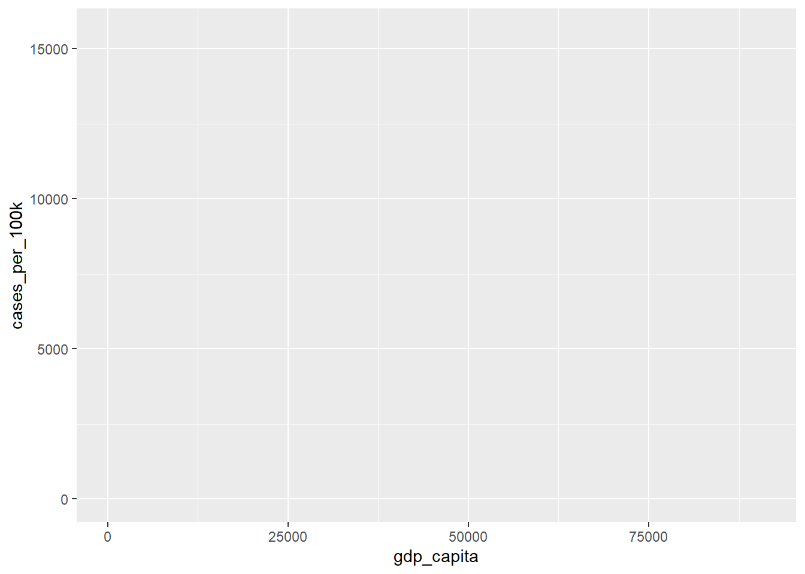
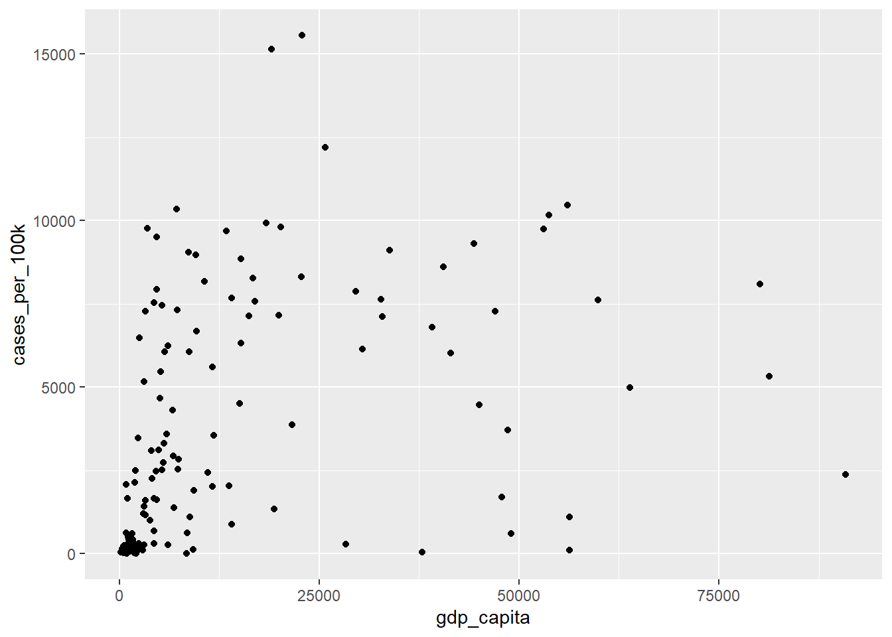

11 Data visualization with ggplot2
In this textbook, the ggplot2 package is the preferred tool for creating plots. With this tool and its extensions, R users can produce elegant, sophisticated, and professional-looking types of graphs that communicate results efficiently to the desired audience.
When we have finished this chapter, we should be able to:
11.1 Introduction to ggplot2
The main idea of ggplot2 is that any plot can be made up of the following principal components:
- data and coordinate system
- geometric objects such as points, bars, lines.
- aesthetic mappings that describe how variables are mapped to visual properties or aesthetics (e.g., color, size, shape) of the graph.
- themes that style all the visual elements which are not part of data.
The key to understanding ggplot2 is thinking about a figure in multiple layers.

11.2 Covid-19 data
In this Chapter, we will explore graphically the association between a country’s wealth and COVID-19 cases. However, there more variables that may be associated to both wealth and COVID-19 cases such as testing rate. For example, wealthier countries may have a national program to distribute tests for the virus, provide advice on how to apply a self-test and report the results to a national organization. Without the resources of wealthy countries to buy and distribute tests, a lack of reported cases in developing countries could indicate a scarcity of testing. In this case, using diagrams to depict multivariable associations may be helpful.
Let’s have a look at the types of variables:
glimpse(covid_data)Rows: 132,236
Columns: 12
$ iso3c <chr> "ABW", "ABW", "ABW", "ABW", "ABW", "ABW", "ABW", "ABW"…
$ country <chr> "Aruba", "Aruba", "Aruba", "Aruba", "Aruba", "Aruba", …
$ date <chr> "3/13/2020", "3/14/2020", "3/15/2020", "3/16/2020", "3…
$ confirmed <dbl> NA, NA, NA, NA, NA, NA, NA, NA, NA, NA, NA, NA, NA, NA…
$ deaths <dbl> NA, NA, NA, NA, NA, NA, NA, NA, NA, NA, NA, NA, NA, NA…
$ total_tests <dbl> NA, NA, NA, NA, NA, NA, NA, NA, NA, NA, NA, NA, NA, NA…
$ region <chr> "Latin America & Caribbean", "Latin America & Caribbea…
$ income <chr> "High income", "High income", "High income", "High inc…
$ population <dbl> 106766, 106766, 106766, 106766, 106766, 106766, 106766…
$ pop_density <dbl> 593.1, 593.1, 593.1, 593.1, 593.1, 593.1, 593.1, 593.1…
$ life_expectancy <dbl> 76.3, 76.3, 76.3, 76.3, 76.3, 76.3, 76.3, 76.3, 76.3, …
$ gdp_capita <dbl> 26631.5, 26631.5, 26631.5, 26631.5, 26631.5, 26631.5, …The data frame contains 132236 rows and 12 variables that are described as follows:
iso3c: ISO3c country code as defined by ISO 3166-1 alpha-3
country: Country name
date: Calendar date
confirmed: Confirmed Covid-19 cases as reported by JHU CSSE1 (accumulated)
deaths: Covid-19-related deaths as reported by JHU CSSE (accumulated)
total_tests: Accumulated test counts as reported by Our World in Data
region: Country region as classified by the World Bank (time-stable): East Asia & Pacific, Europe & Central Asia, Latin America & Caribbean, Middle East & North Africa, North America, South Asia, Sub-Saharan Africa.
income: Country income group as classified by the World Bank (time-stable)
population: Country population as reported by the World Bank (original identifier ‘SP.POP.TOTL’, time-stable)
pop_density: Country population density as reported by the World Bank (original identifier ‘EN.POP.DNST’, time-stable)
life_expectancy Average life expectancy at birth of country citizens in years as reported by the World Bank (original identifier ‘SP.DYN.LE00.IN’, time-stable)
gdp_capita: Country gross domestic product (GDP) per capita, measured in 2010 US-\(\$\) as reported by the World Bank (original identifier ‘NY.GDP.PCAP.KD’, time-stable)
1 JHU CSSE: Johns Hopkins Coronavirus Resource Center
Data preparation for the plots
The data cover a period from 1/1/2020 to 9/9/2021. Suppose we are interested in investigating countries with population more than 1 million up to June, 12 2021 and we want also to calculate the cases per 100000 inhabitants and tests per capita:
11.3 Step-by-step anatomy of a ggplot graph
The ggplot2 is contained within the tidyverse package, so it is installed automatically when we install the tidyverse “meta” package. Furthermore, it is one of the core packages of the tidyverse that are loaded at R session when we run the command library(tidyverse).
Step 0: Start with a default blank ggplot object
ggplot()
Step 1: Start with a default blank ggplot object
The ggplot() function has two basic named arguments. The first argument, data, specifies the dataset that we are going to use for the plot. The second argument, mapping, defines which variables are mapped to x and y aesthetics of position.
Let’s provide the dataset “dat” to the first argument of ggplot() and mapp the variable gdp_capita to the x position and the variable cases_per_100K to the y position inside the aes():
ggplot(data = dat, mapping = aes(x = gdp_capita, y = cases_per_100k))
Note that we don’t usually have to spell out the names of the arguments data and mapping. Therefore, the following command is equivalent:
ggplot(dat, aes(x = gdp_capita, y = cases_per_100k))As we can observe, only a grey canvas is created when running the code. This is because we also need to provide a geometry!
Step 2: Add geometry
Geoms are the geometric objects that make up ggplot2 visualizations. Each geom is called with a function that begins with “geom_ ” and ends with the name of the geometric object (e.g., point, bar, line) (Table 11.1).
| geom_ | Example |
|---|---|
| geom_point() |  |
| geom_line() |  |
| geom_text() |  |
| geom_label() |  |
| geom_histogram() |  |
| geom_density() |  |
| geom_bar() |  |
| geom_boxplot() |  |
Let’s select which style we want to use. We are interested in exploring the association between two numeric variables with a scatter plot (see also Chapter 26). So, we will add points using a geom layer called geom_point. In this case, geom_point() will inherit the x and y aesthetics from the ggplot() function:
ggplot(dat, aes(x = gdp_capita, y = cases_per_100k)) +
geom_point()Warning: Removed 3 rows containing missing values (`geom_point()`).
Step 2: Add aesthtics to geometries
Each geom has a number of aesthetics that define its visual properties. We can map our data to anything that our geom supports. For example, geom_point() understands the following aesthetics (required aesthetics are in bold): x, y, alpha, color, fill, group, shape, size, stroke.
So, if we want to add more variables to a plot, we can use aesthetics like color, shape, and size.
A. color aesthetics
Color is an important characteristic of graphs. If we decide to use color, we should consider which colors to use and where to use them.
Color palettes (or colormaps) are classified into three main categories in ggplot2:
- Sequential (discrete or continuous) palette that is used for quantitative data. One variation of a unique color varying from dark to light (Figure 11.3).

- Diverging palette that creates a gradient between three different colors, allowing us to easily identify low, middle, and high values within our data (Figure 11.4).

- Qualitative palette that is used mainly for discrete or categorical data. This palette is consisted from a discrete set of distinct colors with no implied order (Figure 11.5).

Now, suppose we want to group the points according to the categorical variable region using different colors, as follows:
ggplot(dat, aes(x = gdp_capita, y = cases_per_100k)) +
geom_point(aes(color = region))Warning: Removed 3 rows containing missing values (`geom_point()`).
Here, we added inside the aes() of geom_point the color aesthetic. The data of the categorical variable region mapped to color aesthetic of geom_point. Obviously, the qualitative palette was applied automatically by ggplot2. In addition, ggplot automatically created a legend to show the correspondence between the regions and colors.